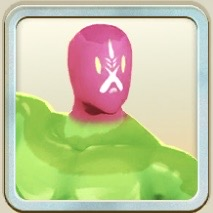

LINE
モンスターファーム
徹底攻略
トップ
モンスター一覧
アシストカード一覧
トップ
>
モンスター一覧
>
幻霊
> マグマグミ
マグマグミ
マグマグミ
黒オーラ
幻霊
主血統
ゲル
副血統
モノリス
評価解説
ゲル×モノリス
登録ランク5技はゲルコプターで性能はまあまあ
同時実装されたアシストカードと技調整も追い風になって、2026年４月の主人公候補筆頭
原作でのファンも多い
バトルはゲルコプター採用しないほうが強いらしい
著者：
ぎん
／ 2026年3月31日 公開・2026年3月31日 更新
同じ血統のモンスター
ゲル
青オーラ / ゲル

エコスライム
緑オーラ / プラント
カンテンムシ
黄オーラ / ワーム
パー・プリン
黒オーラ / ナーガ
関連リンク
👾
モンスター一覧